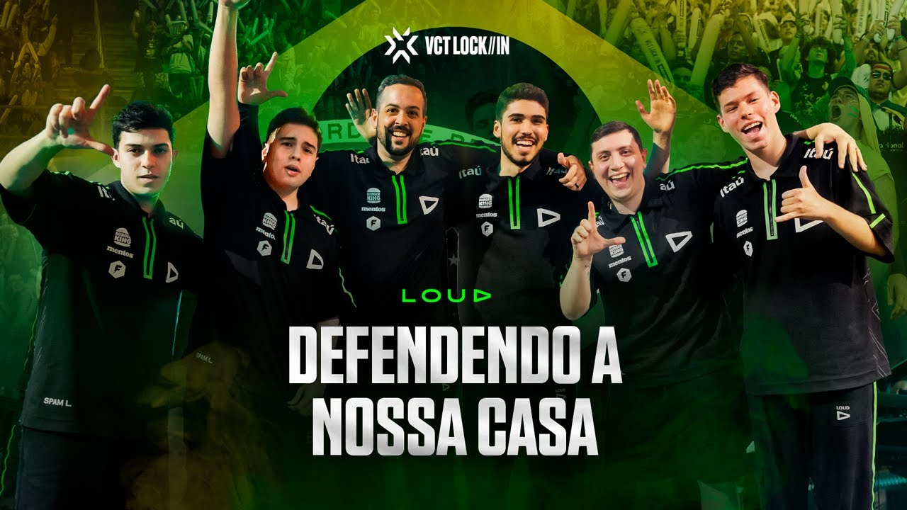
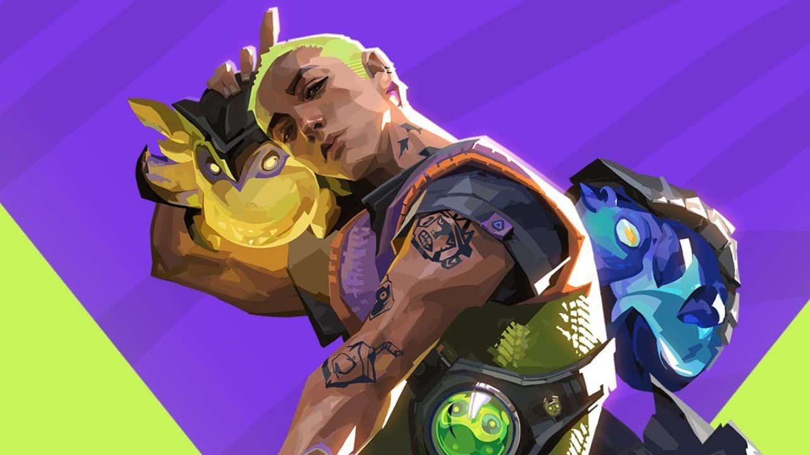

Últimas notícias
-

LOUD lança documentário de trajetória durante VCT LOCK//IN
A atual campeã do Mundo e vice-campeã do VCT LOCK//IN, LOUD, segue com as produções de vídeo para a comunidade de VALORANT. Neste sábado (18) a organização lançou o documentário “Defendendo a Nossa Casa“, uma produção sobre a campanha do time durante o campeonato que aconteceu no Brasil. O longa-metragem acompanha a equipe desde o início da competição, e traz algumas participações especiais de quem fica por trás, nos bastidores. A obra tem quase uma hora e está disponível no canal oficial da organização no YouTube.
-

Nova agente foi lançado na atualização 6.04
Conheça Dizzy, Wingman, Thrash e Mosh, um grupo de criaturas barulhentas a caminho de Los Angeles, a cidade natal do Gekko. Todos estarão disponíveis no EP_6 // ATO II de VALORANT. Vídeo feito em parceria com a Lightfarm Studios.
-

TORNEIOS DE COMUNIDADE - 24/03 A 30/03
Torneios criados pela comunidade para a comunidade! Confira aqui a lista dos Torneios de VALORANT aprovados para a semana de 24/03 a 30/03 e participe: